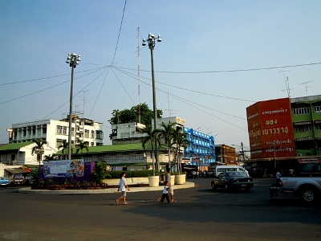

Srisaket
A picture of the town of Srisaket from the bus station. Just out of the picture, to the right of the red store (a store that sells gold) is my favorite noodle place in all of Thailand.
A picture of the town of Srisaket from the bus station. Just out of the picture, to the right of the red store (a store that sells gold) is my favorite noodle place in all of Thailand.